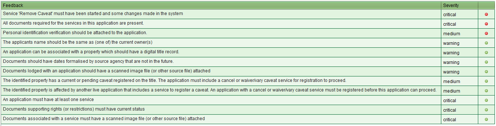

SOLA employs business rules to automatically validate the data entered by a user to ensure consistency of the data as well as warning the user of potential irregularities. Business rules are usually executed just prior to changes in state of an application or a service (e.g. application approval) but can also be manually triggered using the Validation tool in the Application Details screen.
All business rules have a severity rating and the failure of any
critical business rule will cause the current action to be aborted.
In this situation, the user will be required to remedy the issue
reported by the failed critical rule(s) before processing can continue.
The results of the business rules are displayed in the Business Rule
Feedback popup. Each row in the Feedback popup represents a business
rule that has been executed by the validation process. The first
column is a message that describes the business rule from the perspective
that the business rule passes. The last column contains either a green
traffic light icon repressing a pass of the business rule or a red
traffic light representing a fail. The severity rating for each
business rule is also listed. As noted above, any critical fails
from an automated validation will prevent the current process from
completing until the critical fail has been remedied. Other severity
fails will not abort the current action allowing the process to complete.
The default ordering of the validation checks is for fails to appear at
the top ordered by severity.
Where possible, business rules are defined in such a way that if they
are irrelevant to a particular situation, they are excluded and do not
appear in the Feedback popup. Sometimes the complexity of a business
rule prevents this screening process and you may find business rules
listed that are not particularly relevant to the current situation.
Similarly, not all business rules can be automated and so this form
of checking should not be considered the only checking method. However,
if you identify a new business rule that you think could be automated,
contact the SOLA support team with details.
A complete listing of all business rules including what remedial action should be taken is included in SOLA Business Rules
